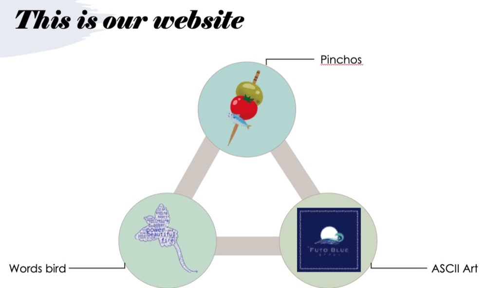
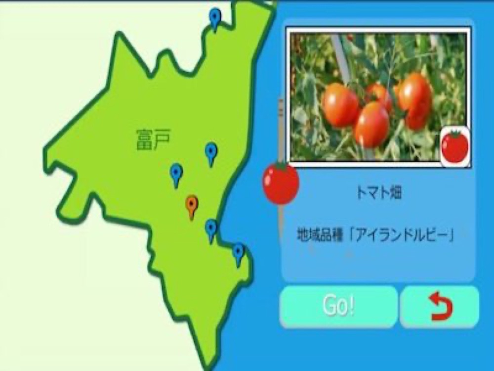

富戸ブルー PR提案

Technology
- HTML
- Python
- openCV
- Processing
2年生後期の授業で行った内容。静岡県伊東市にある地域ブランド「富戸ブルー」をプロモーションするために情報学部と国際コミュニケーションが協力して開発を行なった。
15人が3チームに分かれてそれぞれ開発を行った。私のグループではウェブサイトを作成することでプロモーションを行った。
ゲームやアートなどを体験することができ、webサイトを通して第三者に富戸の魅力を伝えることができる。（Webサイトは現在非公開）
